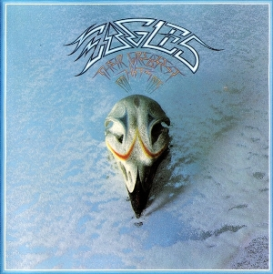
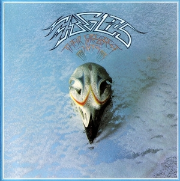

 Thriller
Thriller
Thriller (с англ. — «Триллер») — шестой студийный альбом американского музыканта Майкла Джексона. Выпущен на лейбле Epic Records 29 ноября 1982 года, через три года после выхода предыдущего коммерчески успешного и положительно принятого критиками альбома Джексона Off the Wall. Thriller записан в таких жанрах, как поп, рок, постдиско, ритм-н-блюз и фанк
Работа над альбомом велась в период с апреля по ноябрь 1982 года на студии Westlake Recording Studios[англ.] в Лос-Анджелесе. Продюсированием занимались Куинси Джонс и сам Джексон. Всего в альбоме девять треков, четыре из них были написаны самим певцом. Все семь синглов, выпущенных из Thriller, попали в топ-10 чарта Billboard Hot 100. На три из них были сняты музыкальные видеоклипы. Эта пластинка позволила Джексону сломать расовые барьеры в поп-музыке: видео на песни «Thriller», «Billie Jean» и «Beat It» попали в регулярную ротацию на MTV. Альбом был одним из первых, использующих музыкальные видео в качестве успешного инструмента продвижения. Всего за год Thriller стал самым продаваемым альбомом всех времён и остаётся таковым до сих пор.
Back in Black (с англ. — «Возвращение в трауре») — студийный альбом австралийской рок-группы AC/DC, выпущенный в 1980 году. Шестой международный и седьмой выпущенный в Австралии альбом группы. Является первым релизом группы без вокалиста Бона Скотта, погибшего 19 февраля 1980 года. Второй альбом, спродюсированный Маттом Лангом; записывался на студии Compass Point Studios (Нассау, Багамские Острова) и прошёл сведе́ние в Electric Lady Studios (Нью-Йорк, США).
Смерть вокалиста Бона Скотта застала группу во время работы над этим альбомом и заставила полностью его переделать. Back in Black стал первым альбомом, записанным с пришедшим вместо Скотта Брайаном Джонсоном. Уже в новом составе были написаны песни «Hells Bells», «Have a Drink on Me», а также заглавный трек «Back in Black». Обложка альбома была сделана почти полностью чёрной, в память об ушедшем Скотте.
Альбом был дважды ремастирован и повторно выпущен — в 1997 году в составе комплекта Bonfire и в 2003 году в составе серии AC/DC Remasters.По состоянию на 2023 год, этот альбом является третьим самым продаваемым в истории — продано более 49 миллионов копий.6 декабря 2019 года альбом был сертифицирован Американской ассоциацией звукозаписывающих компаний (RIAA) за реализацию более 25 миллионов экземпляров этой пластинки в США. Back in Black впервые получил платиновый статус 13 октября 1980 года. В списке RIAA Back in Black является четвёртым по популярности альбомом всех времён и народов.
 The Dark Side of the Moon
The Dark Side of the Moon
The Dark Side of the Moon (с англ. — «Тёмная сторона Луны») — восьмой студийный альбом британской рок-группы Pink Floyd, выпущенный 1 марта 1973 года. Самый успешный альбом группы, превративший Pink Floyd в явление мирового масштаба. Один из самых продаваемых альбомов в истории звукозаписи — общее число проданных экземпляров превышает 45 миллионов. Будучи проданным в Великобритании в количестве 4 114 000 копий по состоянию на 2012 год, входит в британскую десятку самых продаваемых альбомов в стране, занимая восьмое место. Оставался в Top 200 США 742 недели, в том числе 591 неделю подряд с 1973 по 1988 год, несколько раз попадая на первое место. Является одним из наиболее известных концептуальных альбомов прогрессивного рока.
Альбом занимает 6 место в списке «Топ-25 лучших альбомов прогрессивного рока по версии Progarchives.com», 4 место в списке «25 лучших классических альбомов прогрессивного рока» по версии PopMatters и 2 место в рейтинге «100 лучших рок-альбомов всех времён» по версии журнала Classic Rock. По версии журнала Rolling Stone, является лучшим прог-альбомом всех времён.